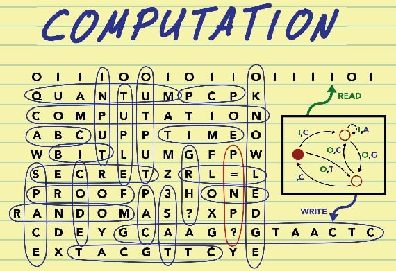
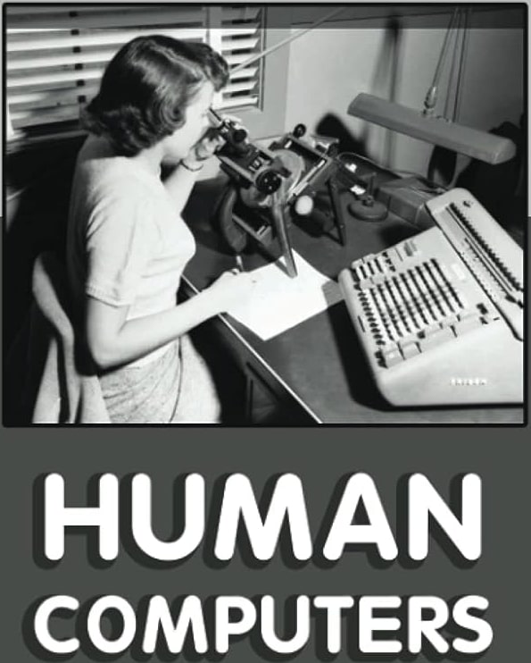

Computing and Crucible Eras
The focus in this article is not on any specific games but rather on the broader historical context in which games, and gaming, came to be situated in a technology context, specifically that of computing.
A Basis in Experimentation ...
Exploring the early days of computing and game development is like peering into the wild west of technology. In the nascent stages, hobbyists — armed with programming languages like BASIC — were somewhat similar to pioneers in uncharted territory.
These early game developers weren't just coding; they were conducting experiments, pushing the limits of the available technology to see what it could do.
It was a fusion of creativity and curiosity, where every line of code was a step into the unknown. Much like scientists in a lab, they were learning by doing, discovering the capabilities and constraints of the hardware as they went along.
Crucially, these games weren't just entertainment; they were manifestations of the evolving relationship between humans and machines, each line of code a small triumph in the ongoing saga of technological discovery. It was a time when the boundaries of possibility were drawn by the imaginations of those who dared to experiment with the digital frontier.
... But a Focus on Computation
Arguably computer science should have been called computing science. Or, at the very least, perhaps there should have been a shift to that terminology as the technology evolved more beyond the hardware itself and into what the software that was running on that hardware actually did.
When I say "computation," please understand that this isn't just about the mechanics of programming or coding. It's about computational design, the latest incarnation of which is most manifested in applications of artificial intelligence.
As a matter of interest, artificial intelligence actually grew up with the idea of technology-based gaming and continues to be used in that context today.
Computation has always been, and still is, what transforms the design of our products and services. This is the intersection of humans and technology, an area that's always fascinated me. Design has always determined how humanizing or dehumanizing that intersection is. One of the ways that computing was always most humanized was when it focused on simulations and games.
When Computing Was Human
It's probably worth keeping in mind that the first computers weren't machines. They were instead human beings. They were humans who computed, by which was meant "worked with numbers."
Consider that way back in 1613 a poet named Richard Brathwait, in his The Yong Mans Gleanings, said:
What art thou (O Man) and from whence hadst thou thy beginning? What matter art thou made of, that thou promisest to thy selfe length of daies: or to thy posterity continuance. I haue read the truest computer of Times, and the best Arithmetician that euer breathed, and he reduceth thy dayes into a short number: The daies of Man are threescore and ten.
Did you spot that interesting word in there? Computer. I'll say again: this passage was from 1613.
So who is this "best Arithmetician" that Brathwait is referring to here? Some have argued that he was conceiving of the "computer of Times" as a divine being that would be able to calculate the exact length of a person's life. Others suggest that Brathwait was legitimately referring to a person who's very good at arithmetic.
As an interesting related note, the mathematician Gottfried Leibniz said this:
If controversies were to arise, there would be no more need of disputation between two philosophers than between two calculators. For it would suffice them to take their pencils in their hands and to sit down at the abacus, and to say to each other . . . Let us calculate.
That was in his 1685 book The Art of Discovery. Here when he says "calculators" he's referring to people and "calculate" as an action they do. Note that Leibniz didn't use the term "computers" or "compute." This makes it all the more interesting that Brathwait seemingly did hit upon that term.
As far as we know, Brathwait is the first to actually write the word "computer" even if we're not quite sure what he meant by it. According to the Oxford English Dictionary there was an earlier usage. Apparently the term "computer" was first used verbally back in 1579. No details are provided and so, at least to my knowledge, there's no way to actually corroborate that.
That said, the reference in the Oxford English Dictionary links the verbal use of the term from 1579 to "arithmetical or mathematical reckoning." And this certainly was a task done by people. This is referenced by Sir Thomas Browne in volume six of Pseudodoxia Epidemica from 1646 as well as Jonathan Swift in A Tale of a Tub from 1704.
So while we don't have a direct thread linking Brathwait's use of the term to those later usages, it's clear that the general idea of "computing," even if going by another name, was in the general Zeitgeist and was focused on what we would certainly now call "computing."
In 1895, the Century Dictionary defined a "computer" as:
One who computes; a reckoner; a calculator.
If we take a side trip into etymology, the root com originates from Latin, meaning "together." The suffix puter likewise has its basis in the Latin word putare which means "to think or trim." Some have proposed that the idea of computer thus meant a "setting to rights" or a "reckoning up."
Eventually computing machines came along to replace the human computers. A relevant idea that really resonated with me comes from John Maeda in his book How To Speak Machine: Computational Thinking for the Rest of Us:
To remain connected to the humanity that can easily be rendered invisible when typing away, expressionless, in front of a metallic box, I try to keep in mind the many people who first served the role of computing 'machinery' . . . It reminds us of the intrinsically human past we share with the machines of today.
Indeed! And as we try to build computing solutions that "act more like us" or "think more like us" or "learn more like us," I think that Maeda's reminder takes on an interesting focus. And that focus of a human past we share with our technology becomes very interesting in the context of games.